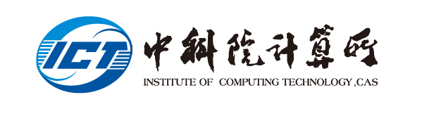

Huimin Cui
Research Direction: Compiler Construction ; Compiler Optimization; Heterogeneous Computing
Department: State Key Lab of Processors
Tutor Category: PhD advisor in Computer Architecture
Contact: cuihm@ict.ac.cn
Personal Page: https://cuihuimin.github.io/

About Me
Huimin Cui is a Professor in the State Key Lab of Processors, ICT, CAS where she leads the programming languages and compilers group. She received her Bachelor and Master degrees from Tsinghua University in 2001 and 2004, respectively, and her PhD degree in ICT, CAS in 2012.
Huimin Cui’s research interests include programming languages, compiler technology and program optimizations. Her current focus is on two areas: (1) compiler optimizations for heterogeneous architectures (including GPU, NPU, DPU and other ASICs), especially for AI and big data applications. (2) software and hardware co-design for new architectures by leveraging compiler analysis. A number of her work have been used in industrial community, including Huawei, Sunway, etc.
Huimin Cui serves as the Editorial Board of Young Scientists of JCST. She also served as the PC member of a number of major conferences in her field, including the Track Chair of Programming Models and System Software in ISC’20, the PC member of PPoPP, CC, CGO, ISCA (ERC), NPC, HIPS, ICPE, PACT, ICPP Cluster and SC.
Publications
-
Unified Holistic Memory Management Supporting Multiple Big Data Processing Frameworks over
Hybrid Memories.
By Chen Lei, Jiacheng Zhao, Chenxi Wang, Ting Cao, John Zigman, Haris Volos, Onur Mutlu, Fang
Lv, Xiaobing Feng, Guoqing Harry Xu, Huimin Cui.
ACM Transactions on Computer Systems (TOCS), 2022